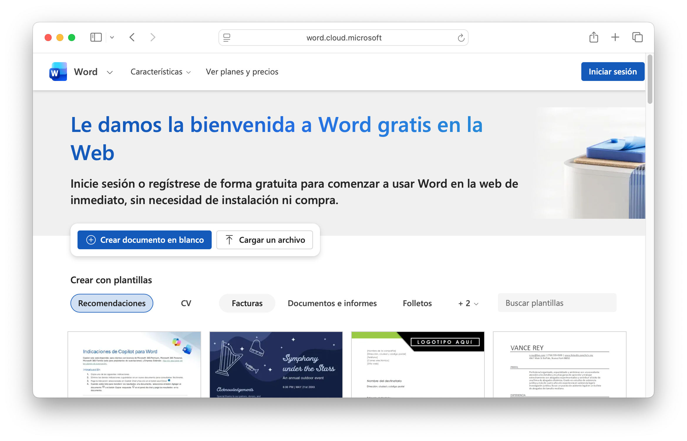
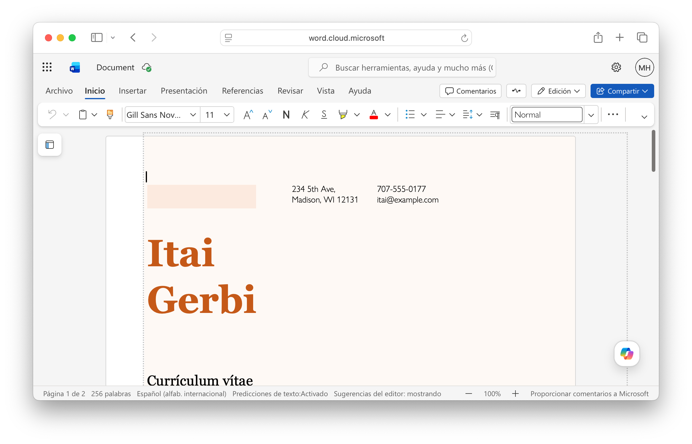
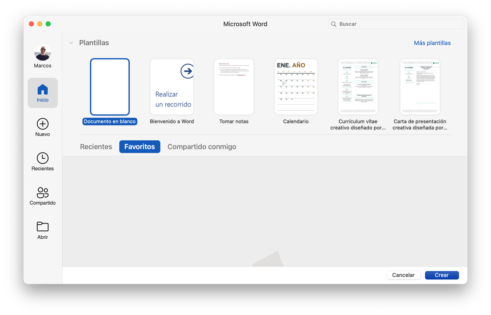
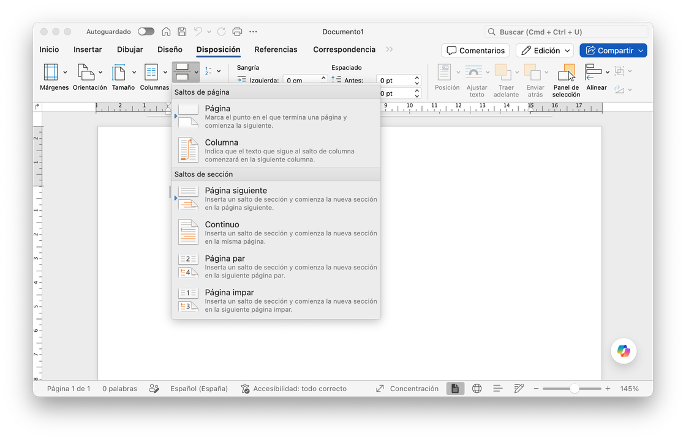

Antes de arrancar: cómo acceder a Word
Esta clase necesita Word de escritorio — el programa instalado, no la versión web.
⚠️ Importante
La versión web (word.cloud.microsoft) no tiene saltos de sección. Sin saltos de sección no hay columnas mixtas ni encabezados diferenciados — los dos temas centrales de hoy. Con la versión web no vas a poder completar las actividades.

Esta es la versión web — sirve para lo básico, pero no para las actividades de hoy. Necesitás el programa instalado.

La prueba está en la cinta: comparado con el programa instalado, a la versión web le falta directamente la pestaña Disposición — ahí es donde viven los saltos de sección.
Si ya tenés Word instalado, abrilo y listo — si te pide sesión, usá tu mail institucional @uvq.edu.ar, el mismo usuario con el que entrás al campus virtual. Microsoft 365 de escritorio es un programa pago: probá primero si tu cuenta institucional ya viene con una licencia incluida (no está confirmado que la UVQ la dé, pero no cuesta nada intentarlo). Si no, hay un camino con descuento confirmado: con tu mail institucional, carnet de estudiante o comprobante de inscripción accedés a 50% off en Microsoft 365 Personal — incluye Word, Excel y PowerPoint de escritorio (no solo la versión web) más 1 TB en OneDrive. Y si no tenés Word instalado ni te interesa pagar ni con descuento, no hay problema — las computadoras de los laboratorios de la UNQ ya lo tienen, y ahí podés hacer esta práctica sin depender de tu cuenta.

La pantalla de inicio de Word de escritorio: elegí "Documento en blanco" para empezar de cero.
💡 Consejo: tu cuenta de la UVQ
Tu usuario de correo institucional es el mismo con el que entrás al campus. Accedé desde https://campus.uvq.edu.ar/correo. Si no te acordás la contraseña o nunca la activaste, gestionala desde ahí mismo.
El documento pensado para el papel
Google Docs y Word de escritorio no son la misma herramienta en distinto lugar: tienen filosofías de diseño opuestas.
| Metáfora central | Lienzo infinito colaborativo | Página de papel con dimensiones fijas |
| Colaboración | Tiempo real, múltiples usuarios | Revisiones y comentarios asincrónicos |
| Fidelidad de impresión | Aceptable para la mayoría de los casos | Exacta: lo que ves es lo que se imprime |
| Funciones avanzadas | Sin saltos de sección reales, sin combinar correspondencia | Secciones, columnas, campos, combinación de correspondencia |
| Ideal para | Borradores, trabajo en equipo, documentos en pantalla | Documentos para imprimir o distribuir en formato fijo |
💡 Idea clave
No se trata de que uno sea mejor. Un borrador colaborativo va en Google Docs; un CV que pasa por un filtro automático de RRHH necesita un .docx bien formateado; un boletín para imprimir 500 ejemplares necesita Word de escritorio.
¿Qué es OneDrive?
Word de escritorio también puede guardar en la nube — no en Drive, sino en OneDrive, el servicio de almacenamiento de Microsoft. Es el mismo concepto que Drive, con otro proveedor.
| Costo | Gratis con cualquier cuenta Google. Plan pago (Google One) desde 100 GB si necesitás más espacio. | Gratis con cualquier cuenta Microsoft. Más espacio viene incluido si tenés una licencia de Microsoft 365 activa. |
| Capacidad gratuita | 15 GB, compartidos entre Gmail, Drive y Fotos. | 5 GB con una cuenta Microsoft personal. Con tu mail @uvq.edu.ar podés sacar gratis una cuenta de Microsoft 365 Educación (confirmado — alta en signup.microsoft.com) que en general trae más espacio; el monto exacto no está confirmado, así que no asumas cuánto tenés sin chequearlo ahí. |
| Privacidad | Privado por default: nadie ve tu archivo hasta que lo compartís vos, por enlace o por cuenta puntual. | Mismo esquema: privado por default, se comparte por enlace o por cuenta. En una cuenta institucional, las políticas de acceso y retención las define la universidad, no Microsoft directamente. |
💡 Idea clave
No hace falta usar OneDrive en esta cursada: el .docx de hoy queda en tu computadora (o en la del laboratorio), y lo que subís a Moodle es el PDF exportado. Pero si alguna vez guardás un archivo de Word "en la nube", ahora sabés que ese espacio se llama OneDrive — el equivalente de Drive, pero de Microsoft.
Lo mismo, en otra herramienta
Todo lo que construiste hasta acá con Google Docs sigue siendo válido — hoy lo hacés en un programa distinto, con sus propios menúes.
| Acción | ||
|---|---|---|
| Pegar sin formato | Ctrl+Shift+V | Ctrl+Shift+V (mismo atajo) o Inicio → Pegar → Pegado especial → Texto sin formato |
| Estilos de título | Desplegable "Texto normal" | Galería de estilos, en la pestaña Inicio |
| Índice automático | Insertar → Elementos de página → Índice | Referencias → Tabla de contenido |
| Notas al pie | Ctrl+Alt+F | Ctrl+Alt+F (mismo atajo), desde la pestaña Referencias |
| Separar contenido en páginas | Un solo tipo de salto (de página) | Salto de página y salto de sección — hoy usás los dos (ver más abajo) |
⚠️ Advertencia: el síntoma más común
Abrís en Word un documento descargado de Google Docs y el índice ya no funciona — los títulos se ven igual que el cuerpo. Eso pasa porque los estilos de título no se transfirieron bien al convertir el archivo. Lo primero que hay que revisar es la galería de estilos de Word: reaplicá Título 1 / Título 2 donde falten.
.doc vs. .docx: no son lo mismo

.doc es el formato viejo de Word (versiones 97 a 2003), binario y cerrado. .docx es el formato actual (desde Word 2007), basado en XML — más liviano, más compatible entre programas (incluido Google Docs) y el que vas a usar siempre en esta cursada. Si alguna vez abrís un archivo .doc heredado, Word lo abre en "Modo de compatibilidad" — conviene guardarlo como .docx (Archivo → Guardar como) antes de seguir trabajando.
Orientarse en la interfaz
Word tiene elementos que no existen en Google Docs y van a aparecer todo el tiempo hoy.
| Elemento | Dónde está | Para qué sirve |
|---|---|---|
| Cinta de opciones | Parte superior | Agrupa los comandos por pestañas: Inicio, Insertar, Disposición, Referencias, Correspondencia |
| Regla horizontal | Debajo de la cinta | Muestra márgenes, sangrías y columnas de la sección actual |
| Barra de estado | Parte inferior | Muestra página, total de páginas y — si lo activás — la sección actual |
| Vista de diseño de impresión | Vista → Diseño de impresión | Muestra el documento tal como se va a imprimir |
Activá el número de sección en la barra de estado: clic derecho sobre la barra gris inferior → marcá "Sección". Y activá los caracteres no imprimibles con el ícono ¶ en Inicio — vas a trabajar con eso encendido toda la clase, para ver exactamente dónde está cada salto.
⚠️ Atención
Lo que no ves con ¶ activo, no podés controlar. Trabajá con los caracteres no imprimibles encendidos mientras aprendés saltos de sección.
Configuración base del documento
Antes de escribir una sola letra: configurá el papel.
Word abre con papel Letter (21,59 × 27,94 cm), el estándar norteamericano. En Argentina se imprime en A4 (21 × 29,7 cm) — son parecidos, pero no iguales. Si trabajás en Letter y entregás en A4, el texto se corre y los márgenes quedan asimétricos. Es el error silencioso más común en documentos universitarios: nadie lo nota hasta que está impreso.
| Qué | Dónde | Valor recomendado |
|---|---|---|
| Tamaño de papel | Disposición → Tamaño | A4 |
| Márgenes | Disposición → Márgenes | Normal (2,54 cm en los cuatro lados) |
| Orientación | Disposición → Orientación | Vertical |
⚠️ Atención: papel primero, contenido después
Si cambiás tamaño de papel o márgenes después de tener secciones configuradas, Word puede redistribuir el texto y romper el diseño que ya armaste. Configurá el papel antes de escribir.
Cuando configurás el papel base, el campo "Aplicar a" del diálogo tiene que decir "Todo el documento" — estás definiendo el formato global. El campo "Esta sección" lo usás más adelante, cuando una sola parte del documento necesite márgenes distintos.
💡 Consejo: A4 por defecto
Disposición → Márgenes → Márgenes personalizados → configurá A4 → "Establecer como predeterminado". Word pide confirmación — aceptá, y cada documento nuevo va a abrir directamente en A4.
El documento de práctica
- Abrí un documento nuevo en Word (Archivo → Nuevo).
- Disposición → Tamaño: si dice "Carta" o "Letter", cambialo a A4.
- Disposición → Márgenes → Normal. Verificá con Márgenes personalizados que sea 2,54 cm en los cuatro lados y "Aplicar a: Todo el documento".
- Disposición → Orientación → Vertical.
- Guardá el documento como
Práctica Word - V01.docx, en la subcarpeta "Clase 05". Es el archivo que vas a usar en todas las actividades de hoy.
Saltos de sección
En Word el documento no es una sola corriente de texto: es una secuencia de secciones. Cada sección puede tener su propio diseño — márgenes, orientación, columnas, encabezado y pie independientes. Un salto de sección es la frontera entre dos secciones.
Por qué el salto de página no alcanza
Un salto de página (Ctrl+Enter, Mac: ⌘+Intro) mueve el cursor a la página siguiente y nada más — no cambia márgenes, columnas ni encabezados. Un salto de sección divide el documento en partes independientes: es como tener varios documentos pegados en uno solo.
| Tipo de salto de sección | Lo que hace | Cuándo usarlo |
|---|---|---|
| Página siguiente | La nueva sección empieza en la página siguiente | Cambiar orientación, iniciar un capítulo, cambiar columnas entre páginas |
| Continuo | La nueva sección empieza en el mismo lugar | Cambiar columnas dentro de la misma página, layouts mixtos |
| Página par / impar | La nueva sección empieza en la próxima página par o impar | Documentos tipo libro, capítulos en página derecha o izquierda |
⚠️ Atención
La mayoría de los usuarios solo conoce el salto de página y nunca llega al de sección. El resultado: documentos que se rompen al imprimir. Saber cuándo usar cada tipo es lo que distingue a un usuario avanzado.

Disposición → Saltos: arriba los saltos de página, abajo — separados — los cuatro tipos de salto de sección.
Se insertan desde Disposición → Saltos → elegís el tipo (no está en Insertar, aunque parezca lógico). Con ¶ activo, cada salto aparece como una línea doble con el texto "Salto de sección (Continuo)" o "(Página siguiente)".
💡 Consejo: eliminar un salto
Seleccioná la línea del salto (con ¶ activo) y apretá Delete. Cuidado: al eliminarlo, el texto de arriba pierde su configuración y adopta el formato de la sección de abajo — revisá que el diseño no se haya roto.
Tus primeros saltos de sección
- En
Práctica Word - V01.docx, pedile a una IA: "Escribime 4 párrafos cortos sobre cualquier tema, sin títulos, solo texto corrido." Pegalo conCtrl+Shift+V(Mac:⌘+Shift+V) — pegar sin formato. - Activá ¶ y verificá que ves los saltos de párrafo.
- Insertá un salto de sección Continuo después del primer párrafo: Disposición → Saltos → Continuo.
- Insertá un salto de sección Página siguiente después del segundo párrafo.
- Verificá en la barra de estado que el número de sección cambia al mover el cursor entre secciones.
- Eliminá uno de los saltos y observá qué pasa con el formato del texto restante. Deshacé con
Ctrl+Z.
Columnas y layouts mixtos
Las columnas son una propiedad de sección — se aplican a la sección actual, no a todo el documento. Por eso podés tener una sección de una columna y otra de dos en el mismo documento.
⚠️ Atención
Si aplicás columnas sin un salto de sección antes, Word convierte todo el documento a ese número de columnas. Siempre creá primero el salto, después aplicá las columnas.
El layout más frecuente
- Sección 1 (una columna): título, introducción.
- Sección 2 (dos columnas): desarrollo, cuerpo del texto.
- Sección 3 (una columna): conclusión o cierre.
Con el cursor en la sección que corresponde: Disposición → Columnas → elegís el número, o "Más columnas" para ancho desigual y separador visual.
💡 Consejo: salto de columna
Dentro de una sección con columnas, Disposición → Saltos → Columna fuerza que el contenido salte a la columna siguiente desde cualquier punto — útil para no dejar una columna con muy poco texto.
Layout mixto
- Seguís en
Práctica Word - V01.docx. Al final del texto que ya tenés, agregá una línea en blanco. - Sección nueva (una columna): título breve + dos oraciones de introducción.
- Insertá un salto de sección Continuo.
- Sección de dos columnas: Disposición → Columnas → Dos. Pedile a una IA 4 párrafos cortos y pegalos con
Ctrl+Shift+V. - Insertá otro salto Continuo para volver a una columna. Si no volvió sola: Disposición → Columnas → Una.
- Escribí una línea de cierre en la última sección.
- Verificá en Vista → Diseño de impresión que el layout se ve correcto.
Diseño de impresión y exportación a PDF
Márgenes y encabezados por sección
Los márgenes y la orientación también son propiedades de sección: Disposición → Márgenes → Márgenes personalizados, y en "Aplicar a" elegís "Esta sección" para no afectar el resto del documento.
⚠️ Atención
Si dejás "Aplicar a: Todo el documento", el cambio sobrescribe los márgenes de todas las secciones, incluso las que ya tenías configuradas. Revisá siempre ese campo antes de confirmar.
Por defecto, cada sección hereda el encabezado de la anterior ("Vincular al anterior"). Para tener un encabezado propio: doble clic sobre el encabezado de esa sección → en la cinta Encabezado y pie de página, desactivá "Vincular al anterior" → editá el texto → doble clic afuera para cerrar.
Revisar antes de exportar
Archivo → Imprimir abre la vista previa en el panel derecho. Úsala siempre antes de entregar, no solo cuando vas a imprimir en papel: recorré el documento página por página y revisá si hay páginas en blanco inesperadas, si los encabezados tienen el texto correcto en cada sección, si las columnas no se cortaron.
Exportar a PDF
Un .docx puede verse distinto en otra computadora — otra versión de Word, fuentes no instaladas. El PDF congela el layout exactamente como lo diseñaste.
Archivo → Exportar → Crear PDF/XPS. El campo que importa en el diálogo es "Optimizar para":
| Opción | Para qué sirve |
|---|---|
| Estándar (publicar e imprimir) | Calidad completa — usala siempre para entregas y documentos que se van a imprimir |
| Tamaño mínimo (publicar en línea) | Comprime imágenes — el PDF pesa menos pero puede verse pixelado impreso |
⚠️ Atención
Si tu documento tiene imágenes, elegí siempre Estándar. Tamaño mínimo puede verse bien en pantalla pero borroso al imprimir.
💡 Consejo: el nombre del archivo importa
Un archivo llamado trabajo.pdf o documento final definitivo (3).pdf dice más de tu organización que el contenido. Seguí la convención de la cursada.
Encabezados, revisión y PDF
- En
Práctica Word - V01.docx, doble clic en el encabezado de la Sección 1. Escribí: "Documento de práctica — Sección 1". - En la Sección 2, desvinculá el encabezado del anterior y escribí: "Documento de práctica — Sección 2 (dos columnas)". Repetí en la Sección 3 si existe.
- Abrí Archivo → Imprimir y recorré el documento: ¿el papel es A4 con márgenes simétricos? ¿hay páginas en blanco de más? ¿los encabezados son correctos en cada sección? ¿las columnas se ven bien?
- Corregí lo que encuentres y volvé a revisar.
- Cuando esté bien: Archivo → Exportar → Crear PDF/XPS → Estándar (publicar e imprimir). Guardalo como
Práctica Word - V01.pdf. - Abrí el PDF generado y confirmá que se ve igual a la vista previa.
 Actualizá tu LinkedIn
Actualizá tu LinkedIn
Dos aptitudes en una sola actividad: Microsoft Word (saltos de sección, columnas y encabezados diferenciados en Word de escritorio) y Maquetación de documentos (Document Layout) — diseñar documentos con secciones mixtas en el mismo archivo.
Tu Trabajo de Investigación, listo para imprimir
En vez de crear un documento desde cero, tomás el Trabajo de Investigación que armaste con Google Docs y lo preparás para impresión y entrega formal en Word.
Aplicar todo al Trabajo de Investigación
- Abrí
Documento Base - V01en Google Docs → Archivo → Descargar → Microsoft Word (.docx) → abrilo en Word de escritorio. - Estructuralo en secciones: Sección 1 (una columna) con portada — título, tu nombre, fecha; salto de sección; Sección 2 (el cuerpo, dos columnas si el contenido lo permite); salto de sección; Sección 3 (una columna) con la bibliografía.
- Configurá los encabezados: la portada sin encabezado (activá "Primera página diferente" y dejalo vacío); las secciones siguientes, desvinculadas del anterior, con el título del trabajo.
- Agregá número de página en el pie, a partir de la Sección 2.
- Revisá en Archivo → Imprimir que se ve correcto en todas las páginas.
- Exportá: Archivo → Exportar → Crear PDF/XPS → Estándar (publicar e imprimir) → guardalo como
Documento Base - V01.pdfen la subcarpeta "Clase 05". - Subí el PDF a la tarea de Moodle de la Clase 05.
💡 Consejo
Al abrir un .docx descargado de Google Docs, algunos estilos pueden haberse desalineado. Antes de aplicar secciones, revisá que los títulos tengan Título 1 / Título 2 correctos — son la base de la jerarquía del documento.
Mensajes personalizados: combinación de correspondencia
La combinación de correspondencia genera muchos documentos casi idénticos donde solo cambian algunos datos — el caso típico en el mundo laboral: una propuesta comercial o un mensaje de seguimiento a una cartera de clientes, personalizado con el nombre y los datos de cada uno, sin copiar y pegar uno por uno.
| Componente | Qué es |
|---|---|
| Documento principal | La plantilla con texto fijo y campos variables, como «Nombre» |
| Fuente de datos | La tabla con los registros: una fila por cliente, una columna por dato |
| Documentos combinados | El resultado: un documento por cada registro |
Tiene sentido cuando tenés más de 5 destinatarios, los datos ya están en una tabla organizada, y el formato es fijo y solo cambian valores puntuales — mensajes comerciales a una cartera de clientes, certificados de eventos, notas de calificación, invitaciones formales.
🔎 Para explorar — paso a paso
- Preparás la fuente de datos: una tabla en Word o Excel con columnas como Nombre, Rubro, Necesidad detectada.
- Correspondencia → Iniciar combinación de correspondencia → Cartas.
- Correspondencia → Seleccionar destinatarios → Usar una lista existente → el archivo con tu tabla.
- Posicioná el cursor donde va cada dato variable → Correspondencia → Insertar campo combinado → elegís el campo. Aparece «Nombre» en el documento.
- Correspondencia → Vista previa de resultados, para navegar entre registros con las flechas.
- Correspondencia → Finalizar y combinar → Editar documentos individuales → Todos. Word genera un único archivo con todos los documentos combinados.
⚠️ Atención
Si movés el documento principal o la fuente de datos a otra carpeta, Word pierde el vínculo y no puede combinar. Guardá ambos archivos en la misma carpeta, y antes de entregar, finalizá la combinación y guardá el resultado sin campos variables.
Tu primera combinación
Imaginá que trabajás en el área comercial de una empresa y tenés que escribirle a una cartera de clientes potenciales, cada uno con su rubro y su necesidad puntual.
- Creá una tabla en Word con 3 columnas: Nombre, Rubro, Necesidad detectada. Cargá 4 filas de datos inventados (por ejemplo: "Panadería López" · "Gastronomía" · "gestionar turnos de reparto").
- En un documento nuevo, escribí un mensaje comercial breve: "Hola «Nombre», vimos que en «Rubro» la necesidad de «Necesidad detectada» es cada vez más frecuente — te contamos cómo podemos ayudarte con eso esta semana."
- Vinculá el documento a tu tabla como fuente de datos (Correspondencia → Seleccionar destinatarios).
- Insertá los tres campos combinados en el lugar correcto.
- Navegá los 4 registros con Vista previa de resultados y verificá los datos.
- Finalizá y combiná → Editar documentos individuales → Todos. El archivo resultante tiene que tener 4 páginas con datos distintos.
Actualizá tu LinkedIn
Combinación de correspondencia (Mail Merge): generar documentos personalizados en serie a partir de una tabla de datos — una skill administrativa y comercial muy pedida que pocos egresados saben nombrar, y menos aún demostrar.
Resumen de la clase
Al principio de la clase planteamos el objetivo: llevar tu documento de la pantalla a la página impresa, con fidelidad garantizada.
Actividades
Referencia rápida
"frase" — frase exacta-excluir — excluye un términosite: — dentro de un dominiofiletype: — por tipo de archivo2020..2026 — rango de añosClaude · Copilot
Kimi
https://doi.org/10.xxxx/... al final de la cita, si existeCtrl+Alt+F (Mac ⌘+Opción+F) — no reemplaza la cita APAdocs.new — lienzo en blanco al instanteCtrl+Shift+V (Mac ⌘+Shift+V) — pegar sin formato, nunca directo de afueraCtrl+Alt+M (Mac ⌘+Opción+M) — comentarioCtrl+Z (Mac ⌘+Z) — deshacerCtrl+Alt+1 — Encabezado 1Ctrl+Alt+2 — Encabezado 2Ctrl+Alt+0 — Texto normalCtrl+K (Mac ⌘+K) — externo: pegás la URL; interno: pestaña Encabezados y marcadoresCtrl+Intro (Mac ⌘+Intro) — salto de página, nunca Enter repetidoCtrl+Alt+M — insertar; clic en el comentario → Responder / ResolverCtrl+Shift+V (Mac ⌘+Shift+V) — pegar sin formatoCtrl+Alt+F (Mac ⌘+Opción+F) — nota al pieCtrl+Enter (Mac ⌘+Intro) — salto de páginaGlosario
Tamaño estándar en Argentina (21 × 29,7 cm), distinto al Letter norteamericano (21,59 × 27,94 cm). Word abre en Letter por defecto.
Unidad de diseño dentro de un documento Word. Cada una puede tener márgenes, orientación, columnas y encabezados independientes.
Marcador que divide el documento en partes con propiedades de página independientes.
Salto de sección que empieza en el mismo punto del texto, sin cambiar de página. Ideal para layouts mixtos.
Distribución del contenido de una sección en columnas verticales paralelas, tipo periódico.
Opción de encabezado/pie que, activa, hace que la sección herede el encabezado de la anterior.
Archivo → Exportar → Crear PDF/XPS. Genera un archivo con el layout congelado. Usar siempre "Estándar" para documentos que se van a imprimir.
Proceso que genera documentos personalizados combinando una plantilla fija con una fuente de datos variable.
Marcador dentro del documento principal («Nombre») que se reemplaza por el valor de cada registro.
Fuentes
- Microsoft. Insertar un salto de sección. Soporte técnico de Microsoft.
support.microsoft.com/es-es/office/insertar-un-salto-de-sección-eef20fd8-e38c-4ba6-a027-e503bdf8375c - Microsoft. Usar la combinación de correspondencia para personalizar cartas. Soporte técnico de Microsoft.
support.microsoft.com/es-es/office/usar-la-combinación-de-correspondencia-para-personalizar-cartas-d7686bb1-3077-4af3-926b-8c825e9505a3 - Microsoft. Guardar o convertir a PDF o XPS en aplicaciones de escritorio de Office. Soporte técnico de Microsoft.
support.microsoft.com/es-es/office/guardar-o-convertir-a-pdf-o-xps-en-aplicaciones-de-escritorio-de-office-d85416c5-7d77-4fd6-a216-6f4bf7c7c110